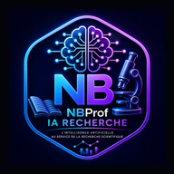

Portefeuille
Vue globale des projets
Suivez l’avancement de chaque projet et reprenez rapidement votre travail.

Visualisez vos projets, vos priorités et vos prochaines échéances en un coup d’œil.
Suivez l’avancement de chaque projet et reprenez rapidement votre travail.
Les tâches urgentes, en retard ou proches de leur échéance.
Repérez où se situent vos projets dans le cycle de recherche.
Créez ou importez un projet pour commencer à suivre votre activité de recherche.
Gérer mes projets